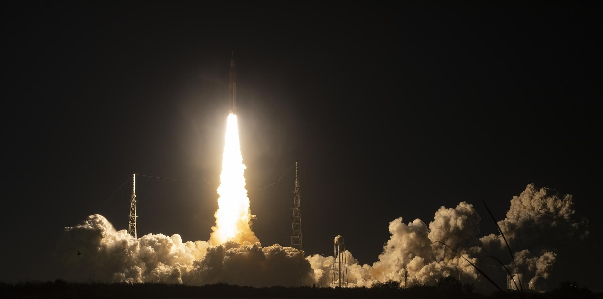

The possible moonquake was detected by India's Chandrayaan-3 mission on its third day on the lunar surface.
These seismic data are the most recent seismic data discovered since 1977.
More Rugged Seismometers from NASA
In 2020, NASA scientists tapped to mature more rugged seismometer system to measure moonquakes.

New Type of Moonquake: Icy Moonquakes
A new NASA study offers an explanation of how quakes could be the source of the mysteriously smooth terrain on moons circling Jupiter and Saturn.